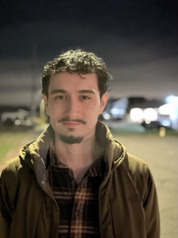
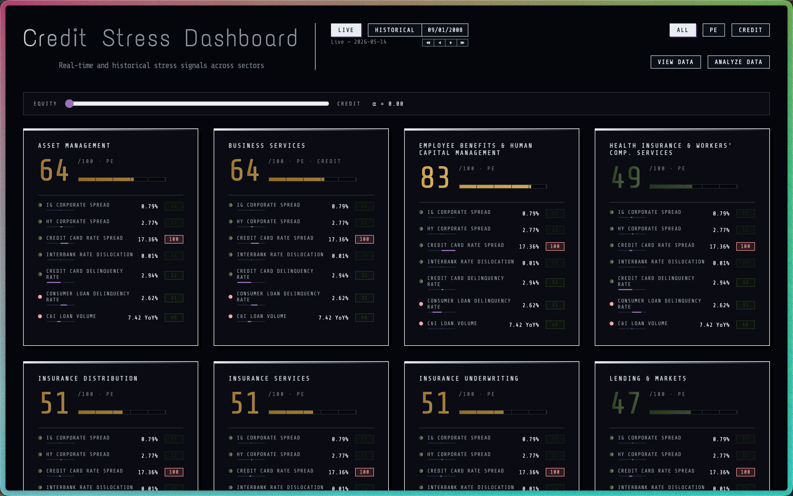
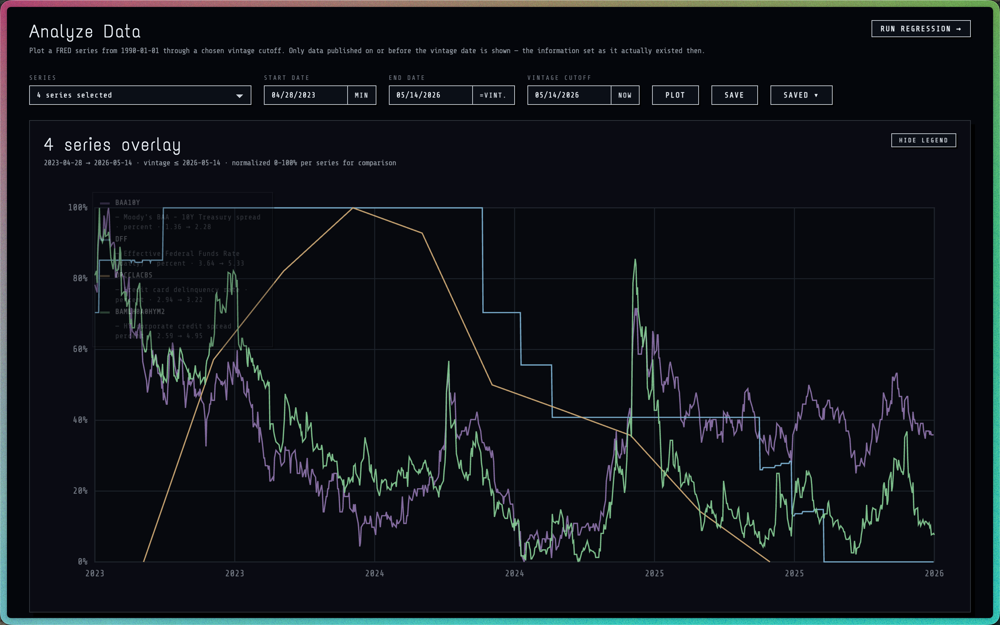
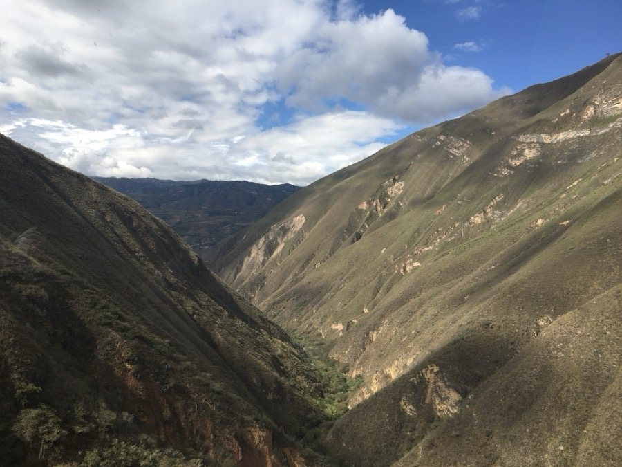
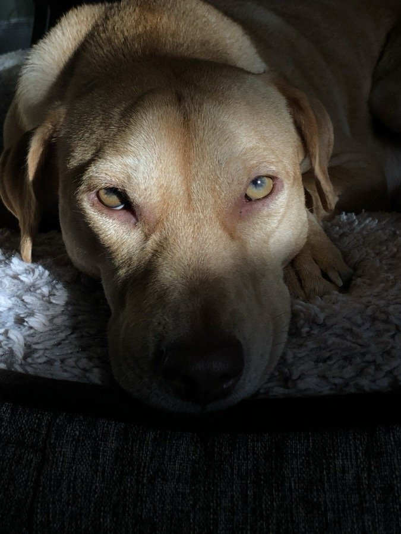

Andrew Jorge
Applied AI engineer in New York City. Bowdoin '25, CS and Math. Most recently at Stone Point Capital, where I built LLM tooling that investment and capital markets teams use on live deals. I'm most interested in designing and evaluating AI workflows where explicit structure, evidence, and decision quality matter as much as the model.
01Experience & Education
Built an interactive assumption tester in R for the private equity valuation team: analysts slide pricing and entry/exit variables and watch valuation, leveraged-buyout returns, and assumption drift recompute in ~1ms, spanning 49 pricing-assumption combinations, 36 entry-and-exit combinations, and 5 model versions, with a browser-side Excel upload and field-tagging that streamlines translation into CSV. Demoed it to a VP, who deemed it fit-for-purpose.
Automated a RAG Q&A tool with exact citations for the Capital Markets team's diligence, citations served from cache before touching raw sources, so every answer is traceable. Shipped an earnings report summarizer for the investment team, conditioned on 50+ prior analyst-written summaries so output matches house style, the difference between a tool analysts adopt and one they ignore.
Built a working RAG prototype over internal IT documentation: hybrid BM25 + FAISS dense retrieval fused by reciprocal rank fusion, a cross-encoder second pass that re-reads the top 40 passages and keeps the 5 most relevant, and a confidence gate that declines below 0.60, scored against the chunks the model actually cited. Designed a RAGAS evaluation framework over a labeled Q&A set (10% deliberately declinable) to catch over-confident answers.
A few courses that shaped how I build, less the syllabus, more what stuck:
- Mathematical Principles of Machine Learning
- The linear algebra, optimization, and probability beneath modern ML, empirical risk minimization, backpropagation, and the universal-approximation results that explain why architectures from transformers to graph neural networks actually work.
- Operating Systems
- Processes, synchronization, virtual memory, and file systems. Where my instinct for concurrency, isolation, and crash-recoverable state comes from, and why it shows up in the lock-free cycle detection and idempotent loaders elsewhere on this page.
- Artificial Intelligence
- Intelligent agents, reinforcement learning, and the arc from classical methods to deep learning, implementing decision trees, classifiers, and neural networks up from problem spaces.
Further coursework Deep Learning in Computer Vision · Statistics · Optimization
02Selected Work
An NL-to-SQL research system that makes the path from a business question to executable SQL inspectable. It parses an AMR-inspired intent graph, retrieves SQL fragments, and uses a lightweight model to assemble a candidate query.
Execution sits behind an MCP authority boundary with typed database tools, SQLGlot AST and schema validation, read-only policy enforcement, timeouts, sandboxed execution, bounded retry, and abstention. Cached traces expose both successful queries and blocked mutations without requiring an API key.
A frozen five-query development comparison found the direct model correct on 4/5 and both structured variants correct on 3/5. The negative result is kept public alongside the error decomposition: the current value is inspectability and safety, not a claimed accuracy win.
An interactive tool for reading a codebase by its structure. Every file is parsed via tree-sitter into nested, selectable pieces, function, block, and expression, drawn over the source and chunked live, aware of structure boundaries down to a single character. Three sliders shape the slicing: granularity, how deep to split; depth spread, how far apart the chosen depths may sit; and context detail, how finely large files are summarized for the AI under a word-count cap.
Each piece carries a stable identity derived from the tree rather than the current zoom, so understanding accumulates across re-chunking instead of being thrown away. Meanings are computed recursively and cached against those identities, so a snippet's standalone meaning is computed once and reused wherever it recurs, and different slicings of a file share their common ancestors, then folded with surrounding scope up through the folder tree so an answer about a single line can draw on the whole project.
Question-answering is retrieval the user steers. The selected piece is the unit, so there is no vector database; the access pattern is an exact-key lookup along one path rather than a similarity search. The meaning cache is content-addressed and self-invalidating, since edited code yields new keys and stale entries are simply never read again, backed by a plain on-disk file with an in-memory layer rather than a standing service. Two Anthropic models are routed by the weight of each read and write request.
The public analysis freezes concept discovery on 685 diffs from 668 repository families, tests 151 components from 132 unseen families, and preserves the decision not to lower the acceptance threshold after human-reviewed precision missed its pre-registered guardrail.
A point-in-time credit stress monitor for 13 financial-services sub-sectors, deployed end-to-end on Northflank and Vercel. ~25,000 macro observations from FRED and yfinance, carrying full revision history back to 1990 and updating live. Dual-timestamp Postgres eliminates look-ahead bias from FRED revisions, so the stress picture for any past date is rebuilt using only the data published by then, never peeking at the future.
182 per-sector indicator weights, each derived empirically via OLS regression and exposed as a live slider, so the model can be re-weighted and replayed at query time.
Designed an entity-resolution pipeline across FDIC and SEC EDGAR to assemble a dataset no single source publishes: 71 bank acquisitions enriched with real deal prices, resolved out of ~11,300 merger records. Then validated a deal-pricing model out-of-sample, trained on pre-2020 deals, tested on later ones, and reported the honest null: macro conditions alone do not predict deal pricing (R² ≈ 0.09).
~5,000-line vanilla JS dashboard over a 20-endpoint FastAPI backend, with idempotent, crash-recoverable loaders.


An observability layer and SDK for LLM agents that turns any Python function into a tool, building its schema from type hints and the docstring. Real-time ReAct visualization and SSE streaming log every event, 10 kinds in all, including tool calls, model calls, errors, and stop conditions, with cost tracked to $0.000001.
O(1) cycle detection threads an immutable frozenset call chain through every sub-agent invocation, preventing recursive loops without locks and without blocking parallel sub-agents; config is snapshotted at run start so mid-flight edits never corrupt a run. SQLite persists versioned run history, so agent behavior can be compared across model, prompt, and tool changes. Hardened on a data-analyst agent (7 tools, 3 chart types) that decides on its own when a chart conveys more than prose. The saved evaluation exposes where the agent fails when its tool surface cannot express the requested analysis, including a documented grader false positive.
A wellness model that works from the body signals underneath a goal rather than the goal alone. Trends in signals like sleep are mapped into seven research-grounded constructs of body state, each computed from its own equation over those inputs, and tied to how much real progress a person is making.
An AI interview captures the goal, what progress actually means to the person, and the body states that bear on it. From there a goal-specific chat translates any activity they are weighing into a quantified cost against that goal, so a late night or a skipped workout reads as a concrete tax rather than a vague maybe-don't. The chat recalibrates how heavily each signal counts as it goes, learning from the somatic symptoms the person reports back.
A personal knowledge-graph app for mapping a subject as a network of ideas and relationships. The model generates the initial graph from notes or an uploaded PDF, then expands and corrects it via a typed GraphDelta diff schema (add, update, delete) rather than regenerating the full graph.
A reflection mode walks the graph breadth-first, prompting the user to articulate each concept; those articulations feed back into the next graph update, closing the loop between user understanding and graph structure. Every model call is typed via Pydantic schemas, so malformed responses fail loudly instead of silently corrupting state.
An event-streaming pipeline with LLM-powered schema repair and human-in-the-loop approval. Kafka ingests events; Great Expectations validates them; a LangGraph agent proposes targeted repairs for failures; a FastAPI dashboard lets a human (or an optional autopilot) approve or reject each proposal.
Postgres is the coordination layer and the audit trail. Every event, every agent proposal, every human decision is persisted and replayable.
An evidence-first experimentation platform for taking a product hypothesis to an auditable decision: typed multivariate variants, versioned assignment, exposure logging, and an operator workflow for launch, data health, and rollback.
It blocks readouts when sample-ratio mismatch or duplicate, missing, late, reordered, or cross-version events compromise the data. Validated 100% repeat-subject stickiness across three 1M-assignment policies and calibrated 10K A/A simulations to a 5.13% false-positive rate with 94.87% interval coverage.
A buyer-research tool that turns CRM and CSV data into overlapping customer segments with cached embeddings and Fuzzy C-Means, keeping every account represented instead of forcing it into a single persona.
It pairs those segments with a citation-backed market-sensing workflow for buyer pains, and includes a pre-registered guided-vs.-self-serve study with a 40% baseline, 25-point minimum detectable lift, 80% power, and a 5-point request-success guardrail.
An observational analysis of 463,152 Brazilian crash records. An AIC-selected logistic model estimated that crashes attributed to pedestrians walking in the road had 11.52 times the adjusted odds of fatality versus alcohol-related crashes in the 404,508-row modeled cohort (95% CI 10.23–12.98). Adjustment for time of day, road delineation, and weather reduced the estimate by 4.9% without turning the association into a causal claim.
03Stack
- AI & Data
- Anthropic & OpenAI APIs, structured outputs, Pydantic, prompt caching, LangGraph, LangChain, FAISS, BM25, hybrid retrieval, cross-encoder rerankers, RAGAS, LLM-as-judge evals, BIRD-SQL, MCP, SQLGlot, PyTorch, pandas, statsmodels
- Backend
- Python, FastAPI, Flask, PostgreSQL, SQLite, Kafka, Redis, Docker
- Frontend
- TypeScript, JavaScript, React, Svelte, D3.js, Vite
- Infra
- AWS, Northflank, Vercel, Git, Docker Compose
- Tooling
- Claude Code, Claude Agent Skills, Cursor, Custom GPTs
- Other
- SQL, Java, C, C++, R

